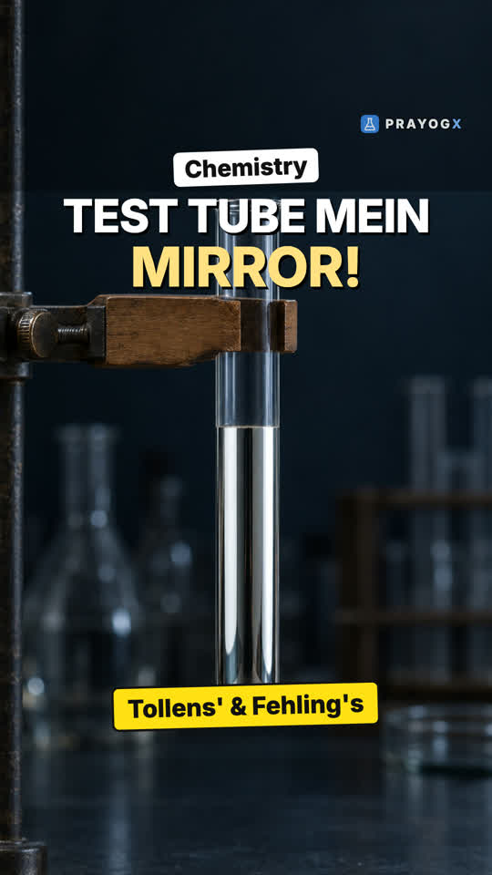
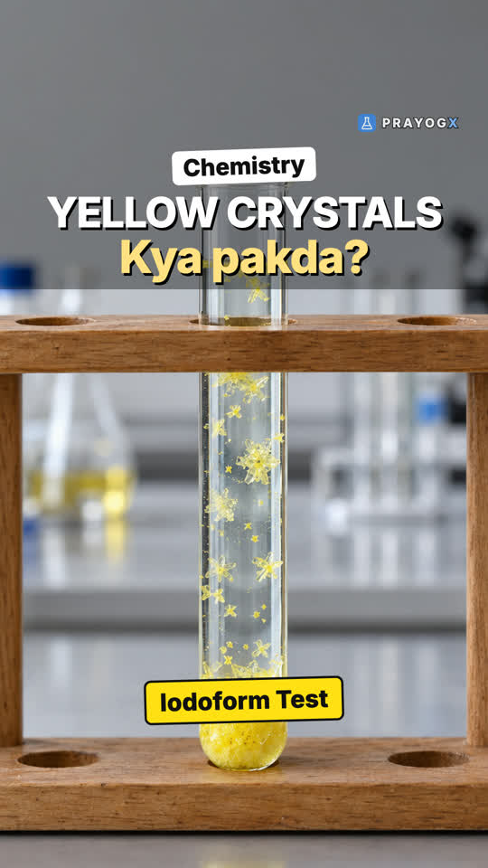
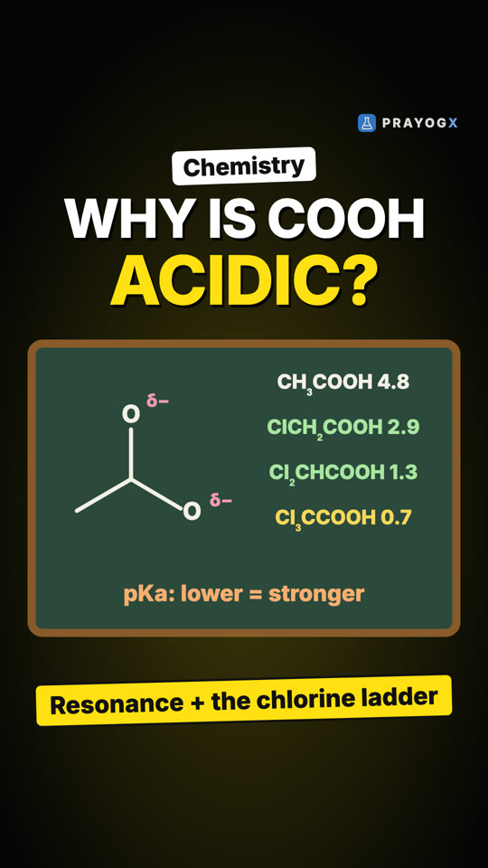
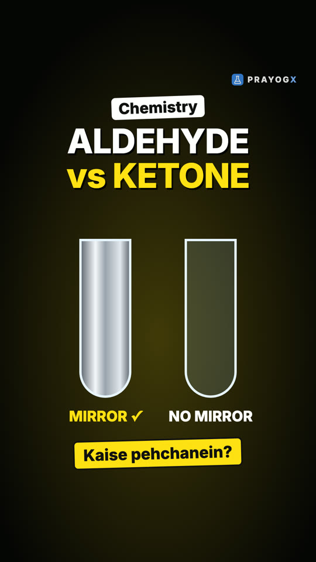
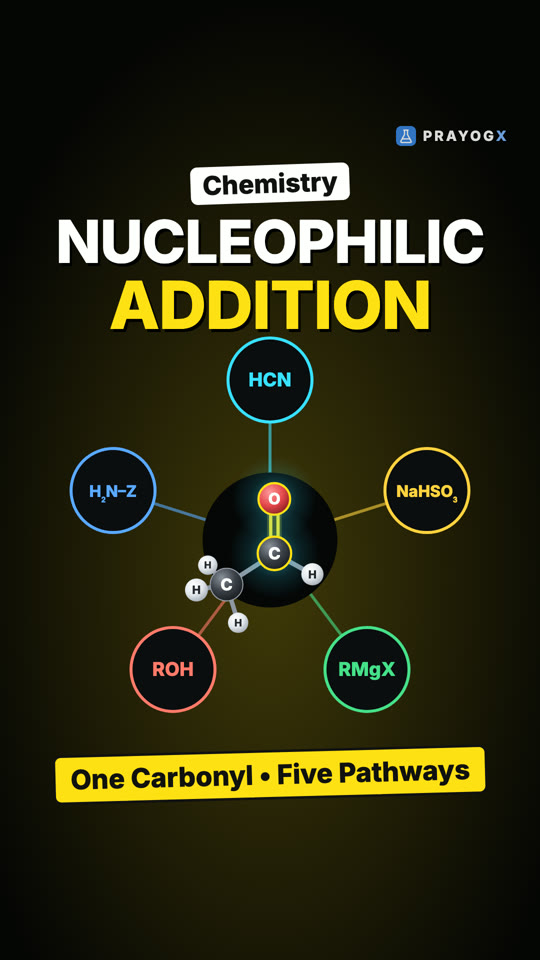
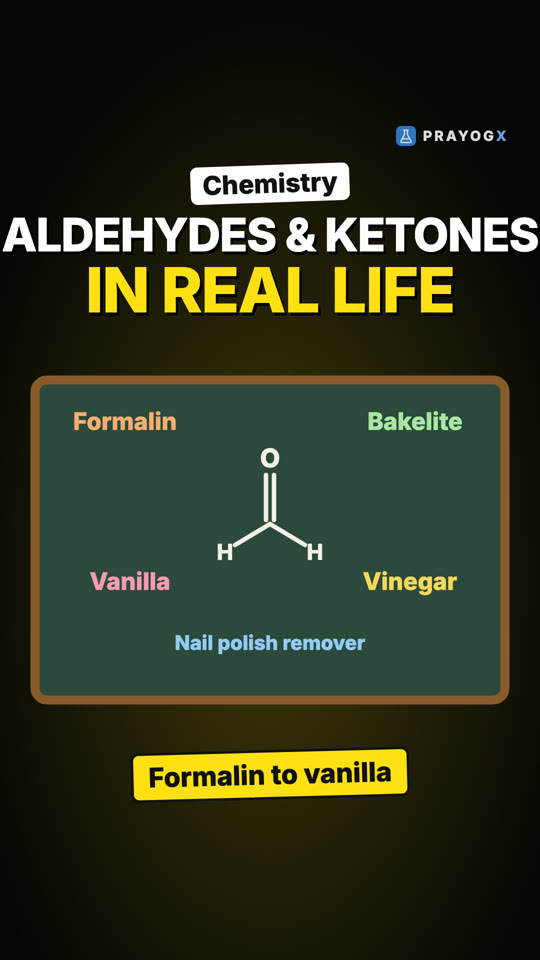
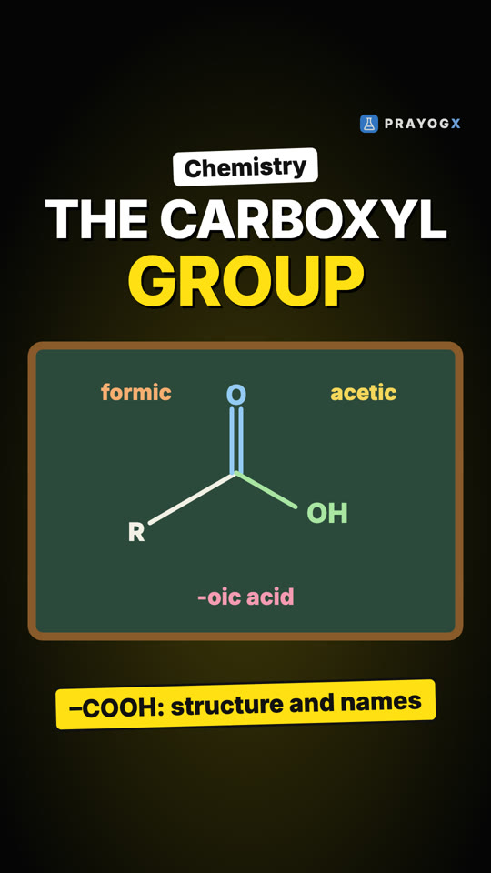
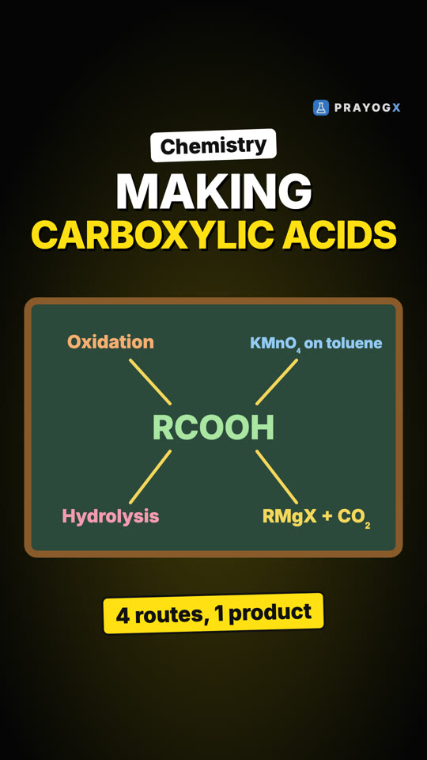
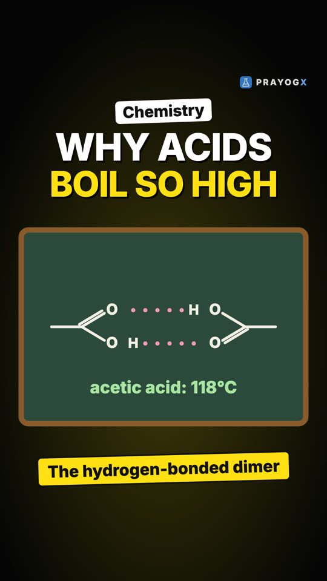

Chapter 8 · Chemistry
Reducing and Oxidising Aldehydes and Ketones
Video not playing? YouTube
Reduction is easy for both aldehydes and ketones, but in oxidation the aldehyde reacts at once and the ketone resists. The reason is one H atom.
Download the short notesPDF, 196 KB · solved examples, practice set and answer key Download the workbook
PDF, 180 KB · fill in the blanks, true/false, assertion-reason, MCQ, numericals, short answer, match the columns; detailed solutions at the end Up next in this chapter

Tollens' and Fehling's TestsWarm a clear liquid and a mirror forms in the test tube. How Tollens' and Fehling's tests tell aldehydes from ketones.Chemistry · simulationKey points
- NaBH₄ or LiAlH₄ reduce aldehydes to primary alcohols and ketones to secondary alcohols.
- Clemmensen (Zn–Hg, conc. HCl) and Wolff-Kishner (NH₂NH₂, KOH) turn C=O into CH₂.
- An aldehyde has an H on the carbonyl carbon, so it oxidises easily to a carboxylic acid with the same carbons.
- A ketone has no such H: it needs strong conditions.
- Ketone oxidation breaks a C–C bond and gives a mixture of acids with fewer carbons.
What each reagent does
| Reagent | Aldehyde | Ketone |
|---|---|---|
| NaBH₄ / LiAlH₄ | 1° alcohol | 2° alcohol |
| Clemmensen, Wolff-Kishner | Alkane | Alkane |
| Mild oxidant | Carboxylic acid | No reaction |
| Strong oxidant | Carboxylic acid | Mixture of acids, fewer carbons |
Try it yourself
Goal: Predict the product of each compound and reagent, and see why a ketone resists mild oxidation.
- Choose a compound.
- Choose a reagent and predict the product.
- Press React and compare.
- Try a mild and a strong oxidant on a ketone.
Quick quiz
3 questions. Choose an answer for each, then submit to see your score and the explanations.
More from Aldehydes, Ketones and Carboxylic Acids
 Nucleophilic Addition to the Carbonyl GroupMost reactions of aldehydes and ketones begin with one move. How a nucleophile attacks the polar C=O, and why aldehydes react faster than ketones.Chemistry
Nucleophilic Addition to the Carbonyl GroupMost reactions of aldehydes and ketones begin with one move. How a nucleophile attacks the polar C=O, and why aldehydes react faster than ketones.Chemistry Aldol Condensation: The Alpha Hydrogen KeyTwo small ethanal molecules join into one bigger molecule. How the alpha hydrogen makes it happen, and which compounds cannot do it.Chemistry · simulation
Aldol Condensation: The Alpha Hydrogen KeyTwo small ethanal molecules join into one bigger molecule. How the alpha hydrogen makes it happen, and which compounds cannot do it.Chemistry · simulation The Cannizzaro ReactionTwo identical aldehyde molecules, two different products. How an aldehyde with no α-hydrogen, in concentrated alkali, is oxidised and reduced in the same reaction.Chemistry · simulation
The Cannizzaro ReactionTwo identical aldehyde molecules, two different products. How an aldehyde with no α-hydrogen, in concentrated alkali, is oxidised and reduced in the same reaction.Chemistry · simulation
The Haloform Reaction: Iodoform TestYellow crystals with a hospital smell reveal the CH₃CO group. How the iodoform test works and which compounds pass it.Chemistry · simulation
Why Carboxylic Acids Are Acidic: Resonance and SubstituentsWhy vinegar fizzes with baking soda: the carboxylate ion shares its charge equally between two oxygens (resonance, arrow by arrow), which makes carboxylic acids stronger than phenols and alcohols; electron-withdrawing groups such as chlorine make them stronger still.Chemistry
Aldehyde or Ketone? The Distinguishing TestsTwo colourless compounds, both with C=O. How Tollens', Fehling's and the iodoform test tell an aldehyde from a ketone, and why they work.Chemistry · simulation
Nucleophilic Addition Reactions: One Carbonyl, Five PathwaysEvery nucleophilic addition reaction of aldehydes and ketones in one place: HCN, NaHSO₃, Grignard reagents, alcohols, and the addition–elimination of ammonia derivatives, with the product each one gives.Chemistry · simulation
Uses of Aldehydes and Ketones: From Formalin to VanillaWhere aldehydes and ketones turn up in daily life: formalin and Bakelite from formaldehyde, acetic acid from acetaldehyde, acetone as a solvent, and vanillin, cinnamaldehyde and benzaldehyde as smells and flavours, each explained from its C=O group.Chemistry
The Carboxyl Group: Structure and NamingWhat –COOH really is: a carbonyl and a hydroxyl on one sp² carbon, joined by resonance that makes the carbon less electrophilic than in aldehydes; and how carboxylic acids get their common and IUPAC names.Chemistry
Preparing Carboxylic Acids: Four RoutesFour ways to make a carboxylic acid: oxidising primary alcohols and aldehydes, oxidising alkylbenzenes, hydrolysing nitriles and esters, and adding a Grignard reagent to dry ice, which adds one carbon (mechanism with curved arrows).Chemistry
Why Carboxylic Acids Boil So High: Hydrogen-Bonded DimersFour molecules of about the same mass boil from 0 °C to 118 °C. Carboxylic acids win because two hydrogen bonds join them into dimers that survive even in the vapour; the same dimers double acetic acid's measured molar mass in benzene.Chemistry